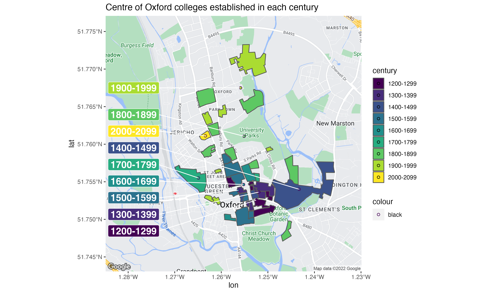
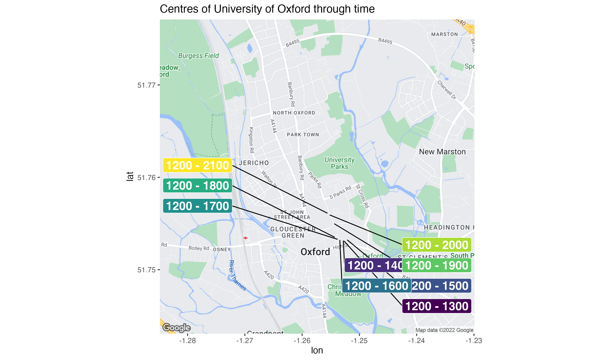

My team at University of Oxford provide research data management and reproducible research advice to researchers across the whole of the University. A fairly common point of contention is where should we meet, and where is the centre of the University?
We broadly agreed that the centre of the University should be calculated as the (weighted) centre of mass of specific buildings or campuses within the University. Two of our favourite options were:
- Centre of mass of all colleges
- Centre of mass of the University divisions
In this blogpost I go through all the steps of scraping and combining data from the OxPoints service and Wikipedia to create the chart below:
How to follow along
If you want to follow along, please follow these steps first:
Create a new RStudio project
Create a data directory by running
dir.create("data")Create a script file in the
datadirectory calledobtain-oxpoints-data.R, we’ll use this to scrape data from Oxpoint.
Get data from OxPoints
OxPoints is a tool for accessing geographic information about University of Oxford and was mostly put together by my friend and ex-colleague Alex Dutton. Now I’ve highlighted Alex is a friend, I can be slightly more candid in scraping data from the service…
We’re going to extract the shapefiles for all colleges in the university and store the data in ESRI shapefiles.
We need to load the following libraries at the top of our data-raw/obtain-oxpoints-data.R script:
library("jsonlite")
library("tidyverse")
library("sf")
library("here")
library("rvest")
library("mapview")There’s not a fantastically well documented way to obtain college data from the API. After jigging about with the search fields the query below returns everything we need, and then we then subset the data (after much trial and error):
raw_json_oxpoints_colleges <- read_json("https://maps.ox.ac.uk/api/places/search?type=%2Funiversity%2Fcollege&inoxford=true&-type_exact=%5C%2Funiversity%5C%2Fsub-library&-type_exact=%5C%2Funiversity%5C%2Froom&count=50&facet=type_exact")
oxpoints_colleges <- raw_json_oxpoints_colleges$`_embedded`$poisThe oxpoints_colleges object contains data for all 38 colleges (at the time of writing). We’re going to iteratively extract the college data through this get_college_data() function.
get_college_data <- function(oxpoints_data,
college_index) {
college_properties <- names(oxpoints_data[[college_index]])
extracted_properties <-
college_properties[college_properties %in% c(
"id",
"lat",
"lon",
"name",
"name_sort",
"shape",
"social_facebook",
"website"
)]
oxpoints_data[[college_index]] %>%
.[extracted_properties] %>%
as_tibble() %>%
mutate_if(is.list, funs(as.character(.))) %>%
mutate_all(funs(parse_guess(.)))
}Let’s extract the first college to create an object we can iteratively fill:
college_oxpoints_data <- oxpoints_colleges %>%
get_college_data(1)Now we can use pwalk to iterate over all other colleges:
tibble(x = 2:38) %>%
pwalk(function(x){college_oxpoints_data <<- college_oxpoints_data %>%
bind_rows(get_college_data(oxpoints_colleges, x))})Our college_oxpoints_data object contains the geometry of each college in the shape column and two columns lat and long of unknown provenance - let’s drop those as well as name_sort and id.
college_oxpoints_data <- college_oxpoints_data %>%
select(-lat, -lon, -id, -name_sort)# A tibble: 6 × 4
name shape social_facebook website
<chr> <chr> <chr> <chr>
1 All Souls College POLYGON ((-1.2529353 51.753888… https://www.fa… http:/…
2 Balliol College POLYGON ((-1.2584285 51.755520… <NA> http:/…
3 Brasenose College POLYGON ((-1.2553351 51.752854… https://www.fa… http:/…
4 Christ Church POLYGON ((-1.2546005 51.751651… https://www.fa… http:/…
5 Corpus Christi College MULTIPOLYGON (((-1.2532213 51.… https://www.fa… http:/…
6 Exeter College MULTIPOLYGON (((-1.2553241 51.… <NA> http:/…Let’s augment this data with whatever we can easily collect from the Wikipedia page on the Oxford Colleges.
Extract data from Wikipedia table
The Colleges of the University of Oxford Wikipedia page provides a useful summary of the colleges, including; year of foundation, financial assets and number of students. We’ve already loaded the rvest package at the top of our script file, which is the go-to tool for web scraping with R. First, let’s import the web page using read_html.
colleges_of_oxford <- read_html("https://en.wikipedia.org/wiki/Colleges_of_the_University_of_Oxford")We want to extract the tables from the web page, which we achieve using html_nodes(). Specifically, we only care about the 3rd table.
colleges_of_oxford <- colleges_of_oxford %>%
html_nodes("table")
colleges_of_oxford <- colleges_of_oxford[[3]]The rvest package does contain a useful function (html_table()) for parsing well-formed tables into tibbles. Unfortunately, our table is not very well formed at all. The first row spans the whole table and contains a glossary for abbreviations in the table, please don’t format your own tables like this. I’ve decided to get around this by extracting all rows from the table, which have the html tag <tr> and extract the contents of these nodes into character vectors using html_text().
colleges_of_oxford <- colleges_of_oxford %>%
html_nodes("tbody") %>%
html_nodes("tr") %>%
html_text()We’ll throw away the top row by asking for parts 2:length(.) and also clean up and nasty trailing/leading white space with str_trim().
colleges_of_oxford <- colleges_of_oxford %>%
.[2:{length(.) - 1}] %>%
str_trim() Now we can convert our vector of characters into a tibble! In the original table, the newline character \n separates pieces of data in each row. So we can use str_replace_all to replace any sequence of repeating \n with a ; and then parse this as a table with read_delim(). Let’s also tidy up the column names before we forget.
colleges_of_oxford <- colleges_of_oxford %>%
str_replace_all("\n{1,}", ";") %>%
tibble(text = .) %>%
separate(text,
into = c("name", "foundation.year", "sister.college", "total.assets", "financial.endowment", "undergraduates", "post.graduates", "visiting.students", "male.students", "female.students", "total.students", "assets.per.student"),
sep = ";")There are several messy columns that we need to convert into numeric data:
colleges_of_oxford %>%
slice(8:9) %>%
select(name, foundation.year, total.assets, financial.endowment)# A tibble: 2 × 4
name foundation.year total.assets financial.endowme…
<chr> <chr> <chr> <chr>
1 Harris Manchester College 1786College: 1996 £40,301,000[27] £14,371,000[27]
2 Hertford College 1282College: 1740 £79,183,000[28] £60,552,000[28] Turns out readr::parse_number() is clever enough to fix our column. It’s convenient to use mutate_at to modify many columns at once, having previously re-arranged columns so all the targets are together:
colleges_of_oxford <- colleges_of_oxford %>%
select(name, sister.college, everything()) %>%
select(name, sister.college, foundation.year, undergraduates, post.graduates, total.students) %>%
mutate(across(foundation.year:total.students, ~parse_number(.x)))We’ve now got all of the information I wanted about the colleges, so let’s combine the tables with left_join(). But this isn’t a well formatted dataset for GIS analysis/visualisation. For that we need to use the sf package.
college_data <- college_oxpoints_data %>%
left_join(colleges_of_oxford)Creating an sf object
sf tibbles are the augmented tibbles of the excellent sf package. They contain both the necessary geometric data for computing & visualising GIS features, and additional non-geometric data about each feature (i.e. the founding year of the college).
Let’s remove the shape column from college_data to provide us with the purely non-geometric data columns, and we’ll append the
Let’s extract all the non-geometric data columns from college_data with select() and create a new tibble college_nongeometric_data that we’ll append the geometric data to below.
college_nongeometric_data <- college_data %>%
select(-shape)In my opinion, this is the one and only fiddly part of using sf. We need to create an sfc object, which is achieved with the st_as_sfc() function. However, this function needs a vector of the features and not a tibble; which is why in the code below we use .[[1]]. If you’re unfamiliar with this trick, please refer to Hadley Wickham’s pepper shaker tutorial.
college_features <- college_data %>%
select(shape) %>%
.[[1]]
college_geometries <- st_as_sfc(college_features)We can now augment college_nongeometric_data with this sfc object via the st_geometry() function. Finally, we’ll create a copy of this with a sensible name: college_shapes
st_geometry(college_nongeometric_data) <- college_geometries
college_shapes <- college_nongeometric_dataOur sf tibble currently suffers from two issues:
- There’s no projection. We’ll assign the standard WGS84 projection with
st_set_crs. - The geometry objects are currently
POLYGON ZandMULTIPOLYGON Zwith zero values forz. As all values are zero, they’re pointless and can be removed withst_zm.
college_shapes <- college_shapes %>%
st_set_crs(4326) %>%
st_zm()Understanding our shapefiles with mapview
Before continuing forwards, we should ensure our shapefiles are what we assume they are: the grounds of each college in the University of Oxford. The mapview package is incredibly useful for exploring and understanding sf tibbles. If you’ve been following along precisely, the script file your in already loads mpaview!
mp_colleges <- college_shapes %>%
mapview()
mp_collegesHow does this help us? Well, we can see that the colleges of the University are mostly clustered together around the city centre and there are some outliers like Wolfson College. If you clicked around a little, you’d also notice that some colleges have multiple sites (they’re MULTIPOLYGONS in the data).
college_shapes %>%
slice(which(st_geometry_type(college_shapes) == "MULTIPOLYGON")) %>%
mapview(zcol = "name", alpha.regions = 1)Fortunately, for all five of these colleges the largest polygon is the actual college and all other polygons can be considered superfluous to the calculation of where the centre of Oxford is. So how do we go about extracting the largest polygon from MULTIPOLYGON items?
Edzer Pebesma is the creator of sf and was kind enough to advise me on Twitter that there’s an unexported function largest_ring that returns the largest polygon. Let’s re-do our data cleaning from above, but add three steps:
- Use
st_zm()andst_set_crs()to remove the Z coordinates and set the projection of the data - Use
st_cast()to convert all POLYGONs to MULTIPOLYGONs - Extract the largest polygon with
largest_ring()
college_features <- college_data %>%
select(shape) %>%
.[[1]]
college_geometries <- st_as_sfc(college_features) %>%
st_zm() %>%
st_set_crs(4326) %>%
st_cast("MULTIPOLYGON") %>%
sf:::largest_ring()
st_geometry(college_nongeometric_data) <- college_geometries
college_shapes <- college_nongeometric_dataNow let’s check out the colleges from before which had multiple sites, looks like we’ve been successful!
college_shapes %>%
filter(name %in% c("Corpus Christi College", "Exeter College", "Magdalen College", "Merton College", "Pembroke College")) %>%
mapview(zcol = "name")It makes sense to export this now nicely formatted GIS data for use in the actual visualisation scripts. GeoJSON is my preferred GIS data format, and we can create that directly using write_sf()
college_shapes %>%
write_sf(here("posts", "2019-02-18_oxford-centres", "shapefiles_oxford_colleges.json"),
driver = "GeoJSON")Visualising college shapefiles with ggmap
ggmap is the best tool for obtaining static map tiles for inclusion in ggplot2 charts, most folks prefer the Google Maps tiles. Unfortunately, since July 2018 users need to provide Google with billing details in order to obtain map tiles. Read my blogpost on how to setup your Google Maps API Key before running the code below.
At the time of writing (January 2018), the version of ggmap on CRAN doesn’t support the new API changes. Run packageVersion("ggmap") in your console, if the version is higher than 2.7 then you’re in luck! If not, you need to install the development version of the package as follows:
devtools::install_github("dkahle/ggmap", ref = "tidyup")Let’s create a new script file for visualising the college shapes, oxford-college-shapes.R. We’ll need to load the following packages at the top of the script
library("tidyverse")
library("here")
library("ggmap")
library("sf")
library("glue")
library("ggrepel")Our GIS data was exported in the previous section, let’s import it ready for use in this script:
college_shapes <- read_sf(here("posts", "2019-02-18_oxford-centres", "shapefiles_oxford_colleges.json"))Before creating our maps we need to register our Google Maps token using register_google():
register_google(key = "My-FAKE-KEY")get_googlemap() gets us a map from the Google Maps API but requires both a center and (integer) zoom level, I’ve fiddled around for a while and think the following work well for us.
base_map <- get_googlemap(center = c(-1.257411, 51.7601055),
maptype = "roadmap",
zoom = 14)In order to create ggplot2 charts containing map tiles from ggmap we need to start with the ggmap() function and add layers with +
gg_oxford_city <- ggmap(base_map)
gg_oxford_city +
geom_sf(data = college_shapes, inherit.aes = FALSE, alpha = 0)This is too busy a map to really communicate anything, it would be great if we could remove some of the labels and landmarks from the base map. To do that, we need to use the style argument of ggmap().
The Google Maps JavaScript API doesn’t make it easy to figure out how to manipulate multiple styles at once. This page advises, “do not combine multiple operations into a single style operation”. What’s that mean?!
- If modifying just one style, we can give the
styleargument a vector
get_googlemap(center = c(-1.257411, 51.7601055),
maptype = "roadmap",
zoom = 14,
style = c(feature = "feature:poi.park", visiblity = "off")) %>%
ggmap()- If modifying more than one style, we need to give a string containing multiple styles
get_googlemap(center = c(-1.257411, 51.7601055),
maptype = "roadmap",
zoom = 14,
style = "&style=feature:poi|visibility:off&style=feature:poi.park|visibility:on&style=feature:landscape.man_made|visibility:off") %>%
ggmap()Let’s create a utility function for creating these style strings.
make_ggmap_styles <- function(styles){
styles %>%
mutate(style = glue("&style=feature:{feature}|visibility:{visibility}")) %>%
select(style) %>%
.[[1]] %>%
paste0(collapse = "")
}Here are the things we’d like to show/hide:
my_styles <- tribble(
~feature, ~visibility,
"poi", "off",
"poi.park", "on",
"landscape.man_made", "off"
) Now we have a good looking gg_oxford_city that we can play with:
base_map <- get_googlemap(center = c(-1.257411, 51.7601055),
maptype = "roadmap",
zoom = 14,
style = my_styles %>%
make_ggmap_styles())
gg_oxford_city <- ggmap(base_map)
gg_oxford_city
It’s really incredibly how flexible the ggplot2 extensions system is, we can label sf objects using ggrepel::goem_label_repel with barely any effort. The only effort I did expend was on choosing a good value for nudge_x.
gg_oxford_city +
geom_sf(data = college_shapes, inherit.aes = FALSE,
aes(fill = foundation.year < 1300)) +
geom_label_repel(
data = college_shapes %>%
select(!where(is.list)) %>%
filter(foundation.year < 1300),
aes(label = name, geometry = geometry),
stat = "sf_coordinates",
nudge_x = 2,
inherit.aes = FALSE
)Animating the centre of mass over time
Now we’ve finally got to the point that we can compute the centre of the colleges over time! Let’s create a new script file college-centres-over-time.R and load our libraries.
library("tidyverse")
library("ggmap")
library("sf")
library("glue")
library("ggrepel")Again, we need to import our GIS data:
college_shapes <- read_sf(here("posts", "2019-02-18_oxford-centres", "shapefiles_oxford_colleges.json"))We also need to ensure that we register with the Google Maps API when running this script and set-up our base map again.
make_ggmap_styles <- function(styles){
styles %>%
mutate(style = glue("&style=feature:{feature}|visibility:{visibility}")) %>%
select(style) %>%
.[[1]] %>%
paste0(collapse = "")
}
my_styles <- tribble(
~feature, ~visibility,
"poi", "off",
"poi.park", "on",
"landscape.man_made", "off"
)
base_map <- get_googlemap(center = c(-1.257411, 51.7601055),
maptype = "roadmap",
zoom = 14,
style = my_styles %>%
make_ggmap_styles())
gg_oxford_city <- ggmap(base_map)Let’s see how the centre of mass of the colleges changes each century. I’ve created century_cut() which wraps cut() to create prettified centuries.
century_cut <- function(x, lower = 0, upper, by = 100,
sep = "-", above.char = "+") {
labs <- c(paste(seq(lower, upper - by, by = by),
seq(lower + by - 1, upper - 1, by = by),
sep = sep),
paste(upper, above.char, sep = ""))
cut(floor(x), breaks = c(seq(lower, upper, by = by), Inf),
right = FALSE, labels = labs)
}
colleges_by_century <- college_shapes %>%
group_by(century = century_cut(foundation.year, lower = 1200, upper = 2100, by = 100))
## Messy code to display just the name and century of creation
display_colleges_by_century <- colleges_by_century %>%
select(name, century)
st_geometry(display_colleges_by_century) <- NULL
display_colleges_by_century %>%
arrange(century)# A tibble: 38 × 2
# Groups: century [9]
name century
<chr> <fct>
1 Balliol College 1200-1299
2 Hertford College 1200-1299
3 Merton College 1200-1299
4 St Edmund Hall 1200-1299
5 University College 1200-1299
6 Exeter College 1300-1399
7 New College 1300-1399
8 Oriel College 1300-1399
9 The Queen's College 1300-1399
10 All Souls College 1400-1499
# … with 28 more rowsNow we’ve done this we can calculate the centres for each century:
colleges_by_century %>%
group_by(century) %>%
summarise(geometry = st_union(geometry)) %>%
st_centroid()
century_centres <- colleges_by_century %>%
group_by(century) %>%
summarise(geometry = st_union(geometry)) %>%
st_centroid()
gg_century_centres <- gg_oxford_city +
geom_sf(data = colleges_by_century,
aes(fill = century), inherit.aes = FALSE) +
geom_sf(data = century_centres,
aes(fill = century,
color = "black"), inherit.aes = FALSE, shape = 21) +
geom_label_repel(
data = century_centres,
aes(label = century, fill = century, geometry = geometry),
stat = "sf_coordinates",
color = "white",
nudge_x = -1,
inherit.aes = FALSE,
size = 5,
fontface = 'bold',
show.legend = FALSE
)
gg_century_centres <- gg_century_centres +
labs(title = "Centre of Oxford colleges established in each century") +
scale_fill_viridis_d() +
scale_color_viridis_d()
gg_century_centres
Now we’ve established the centre of the colleges for each century, let’s compute the cumulative centres as time progresses. For simplicity, let’s throw away all of the data except for the longitude and latitude of the centre of mass in each century. The centre_over_time_period() function returns the centre of mass for all colleges established within the specific time period:
centre_over_time_period <- function(shapes, lower, upper){
# print("a")
suppressWarnings(shapes %>%
filter(foundation.year >= lower & foundation.year < upper) %>%
st_centroid() %>%
st_combine() %>%
st_centroid() %>%
st_coordinates() %>%
as_tibble() %>%
rename(long = X,
lat = Y))
}
centre_over_time_period(college_shapes,
lower = 1500,
upper = 1600)# A tibble: 1 × 2
long lat
<dbl> <dbl>
1 -1.26 51.8Using pmap() we can calculate the cumulative college centres:
time_periods <- tibble(
lower = 1200,
upper = seq(1300, 2100, 100)
)
centres_through_history <- time_periods %>%
mutate(centre = pmap(list(lower, upper), function(lower, upper) {
centre_over_time_period(college_shapes,
lower,
upper)
})) %>%
unnest(cols = c(centre)) %>%
st_as_sf(coords = c("long", "lat")) %>%
st_set_crs(4326) %>%
mutate(time_period = glue("{lower} - {upper}"))We can visualise these cumulative centres using geom_label_repel(), just as above. But with carefully selected nudge factors:
gg_centres_through_time <- gg_oxford_city +
# geom_sf(data = centres_through_history) +
geom_label_repel(
data = centres_through_history,
aes(label = time_period, fill = time_period, geometry = geometry),
color = "white",
segment.color = "black",
stat = "sf_coordinates",
min.segment.length = 0.2,
nudge_x = sample(c(-1,1), nrow(centres_through_history), replace = TRUE),
nudge_y = sample(c(0.007, -0.007), nrow(centres_through_history), replace = TRUE),
inherit.aes = FALSE,
seed = 5,
size = 5,
fontface = 'bold',
show.legend = FALSE
) +
labs(title = "Centres of University of Oxford through time") +
scale_fill_viridis_d()
gg_centres_through_time
I’m slightly late to the gganimate bandwagon, but let’s animate this! The transition_states() function will create a GIF that transitions through the time_period column, and I’ve used shadow_wake() so that the centre of mass can be tracked more easily by the reader.
library("gganimate")
anim <- gg_oxford_city +
geom_sf(data = centres_through_history, inherit.aes = FALSE) +
transition_states(time_period,
transition_length = 2,
state_length = 1)
anim +
enter_fade() +
shadow_wake(wake_length = 0.05) +
exit_shrink()
anim_save(here("oxford-centres.gif"))I’d really love to be happy with this GIF, but it’s really not good! The main issue is that ggamp only allows integer zoom levels, so the map is either far too zoomed in or out. It’s also quite slow to experiment with geom_sf at the moment, I’m quite excited for Thomas Pederson’s promise to speed up geom_sf.
Reuse
Citation
@online{hadley2019,
author = {Charlotte Hadley},
title = {Where Is the Centre of {University} of {Oxford?}},
date = {2019-02-18},
url = {https://visibledata.co.uk/posts/2019-02-18_oxford-centres},
langid = {en}
}